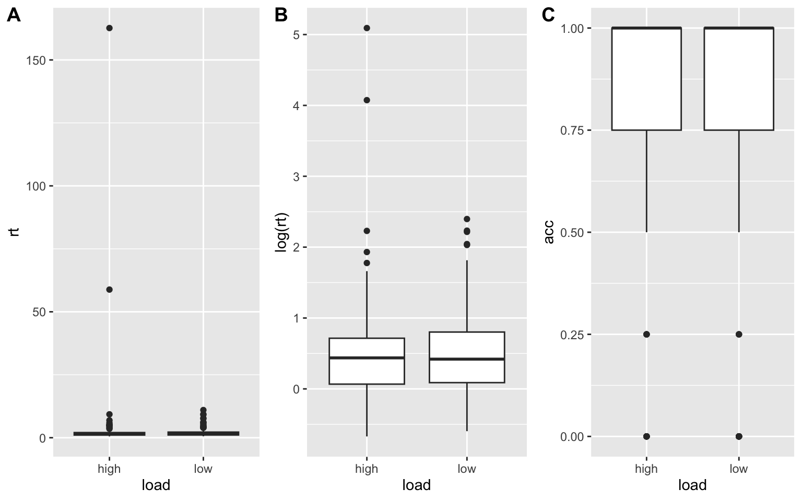
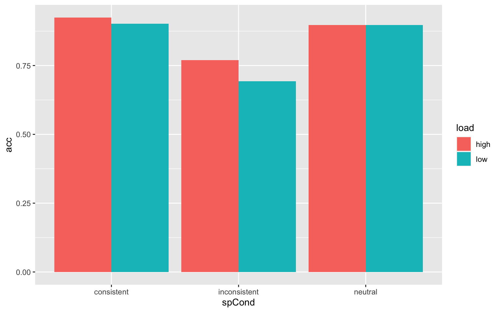

Dissertation Prelim Analysis for MCLS 2023
https://joshm7.github.io/Output_PrelimAnalysis.html
About the Participants
Demographic Characteristics
XX signed the consent form but 33 so far has completed the study. The average age of the sample is XX.
| Characteristic | N = 331 |
|---|---|
| Which gender do you identify with? | |
| Female | 18 (55%) |
| Gender variant or non-conforming | 1 (3.0%) |
| Male | 14 (42%) |
| Which ethnicity do you identify with? | |
| Not Hispanic or Latino or Spanish Origin | 31 (94%) |
| Prefer not to answer | 2 (6.1%) |
| Which race do you identify with? | |
| Asian | 4 (12%) |
| Black or African American | 6 (18%) |
| Native Hawaiian or Other Pacific Islander | 1 (3.0%) |
| Prefer not to answer | 1 (3.0%) |
| Two or more races | 1 (3.0%) |
| White | 20 (61%) |
| In which country did you receive most of your education? | |
| Outside the United States | 2 (6.1%) |
| United States | 31 (94%) |
| What is the highest level of education you have achieved? | |
| __other | 1 (3.0%) |
| College | 13 (39%) |
| Graduate school | 16 (48%) |
| Middle/High school | 3 (9.1%) |
| How many math classes have you taken after high school? | |
| 0 | 1 (3.0%) |
| 1 | 4 (12%) |
| 2 | 11 (33%) |
| 3 | 1 (3.0%) |
| 3 or more | 16 (48%) |
| If you are in a college, university or any postsecondary institution, what is your major or your field of study? | |
| Non-STEM | 12 (36%) |
| Not applicable | 8 (24%) |
| STEM (science, technology, engineering, and mathematics) and social sciences | 13 (39%) |
| if you have a minor, what is your minor in? | |
| Non-STEM | 10 (30%) |
| Not applicable | 14 (42%) |
| STEM | 9 (27%) |
| Are you a working professional (not attending college or any postsecondary school)? | 19 (58%) |
| 1 n (%) | |
Math Anxiety
Participants completed the nine-question Abbreviated Math Anxiety Scale, along a Likert scale from 1 (low anxiety) to 5 (high anxiety). On average, the participants had low math anxiety (Mean=2.48).


Analytic Plan
After participants complete the demographic questionnaires, participants take both phonological and visual span tasks, from which load information is taken (80% for high difficulty and 99% for low difficulty for each type). Participants then complete the dual span tasks, with three blocks/task conditions: only neutral, all-spacing conditions, and all-spacing conditions with parentheses.
The final dataset consisted of participants’ background characteristics, as well as accuracy and response times for arithmetic problems under working memory load (type and difficulty) and spacing conditions. Outliers are defined as more than three standard deviations above or below the mean; however, they will not be removed.
Descriptive Statistics
From each of the 33 participants, RTs and accuracy for 180 trials (60 arithmetic problems, 3 task conditions) were gathered. In a longform dataset, there were 5940 rows. Data cleaning was then conducted:
- 45 trials (.8% of all trials) were removed due to no expressions being displayed during one block (all for one participant)
- For those with incorrect answers, 646 RTs (10.8%) were removed (inserted NA).
RTs were converted to seconds (ms/1000) for the following analysis. Seven RTs were found to be outliers but were not removed; RTs were also logarithmically-transformed.
The mean for the RT variable (n = 5249 trials) is 2 seconds (median = 1.3s, standard deviation = 9.2s). The mean for the acc variable (n = 5895 trials) is 0.89 (med = 1.0, sd = 0.3s).

vars n mean sd median trimmed mad min max range skew kurtosis
rt 1 5249 2.00 9.17 1.3 1.43 0.72 0.31 486.43 486.12 45.91 2268.19
acc 2 5895 0.89 0.31 1.0 0.99 0.00 0.00 1.00 1.00 -2.50 4.25
se
rt 0.13
acc 0.00
vars n mean sd median trimmed mad min max range skew kurtosis
log_rt 1 5249 0.33 0.67 0.26 0.28 0.55 -1.17 6.19 7.36 1.07 3.59
acc 2 5895 0.89 0.31 1.00 0.99 0.00 0.00 1.00 1.00 -2.50 4.25
se
log_rt 0.01
acc 0.00Inferential Statistics
To answer my research questions, I conducted analyses of variance (ANOVAs). My dependent measures were accuracy and response times for arithmetic problems with working memory load difficulty and type and spacing as factors. Post-hoc comparisons were conducted for significant interactions.
RQ 1. To what extent does multi-operand arithmetic involve working memory?
To answer this question, I will conduct an ANOVA with 2 working memory load difficulties (high and low) x 2 types (phonological and visuospatial) as factors in the first dual-task condition. The working memory task will likely interfere with the arithmetic task with no differences in accuracy and response times between types and with lower accuracy and slower response times in high vs. low load.
Main Effects of WM Load Difficulty

Descriptive statistics by group
load: high
vars n mean sd median trimmed mad min
id1 1 66 8610131.24 117997.22 8645491.00 8625542.41 87649.83 8302183.00
wmLoad* 2 66 1.50 0.50 1.50 1.50 0.74 1.00
load* 3 66 1.00 0.00 1.00 1.00 0.00 1.00
rt 4 66 1.85 0.91 1.59 1.77 0.89 0.63
acc 5 66 0.89 0.16 0.93 0.92 0.10 0.40
max range skew kurtosis se
id1 8738211.00 436028.00 -1.06 0.03 14524.45
wmLoad* 2.00 1.00 0.00 -2.03 0.06
load* 1.00 0.00 NaN NaN 0.00
rt 5.37 4.74 1.12 1.70 0.11
acc 1.00 0.60 -1.46 1.03 0.02
------------------------------------------------------------
load: low
vars n mean sd median trimmed mad min
id1 1 66 8610131.24 117997.22 8645491.00 8625542.41 87649.83 8302183.00
wmLoad* 2 66 1.50 0.50 1.50 1.50 0.74 1.00
load* 3 66 1.00 0.00 1.00 1.00 0.00 1.00
rt 4 66 2.28 1.54 1.80 2.08 1.09 0.49
acc 5 66 0.87 0.15 0.93 0.90 0.10 0.40
max range skew kurtosis se
id1 8738211.00 436028.00 -1.06 0.03 14524.45
wmLoad* 2.00 1.00 0.00 -2.03 0.06
load* 1.00 0.00 NaN NaN 0.00
rt 7.83 7.35 1.27 1.28 0.19
acc 1.00 0.60 -1.24 0.71 0.02Main Effects of WM Load Type

Descriptive statistics by group
wmLoad: p
vars n mean sd median trimmed mad min
id1 1 66 8610131.24 117997.22 8645491.00 8625542.41 87649.83 8302183.00
load* 2 66 1.50 0.50 1.50 1.50 0.74 1.00
wmLoad* 3 66 1.00 0.00 1.00 1.00 0.00 1.00
rt 4 66 1.97 1.30 1.64 1.76 0.96 0.49
acc 5 66 0.88 0.15 0.93 0.90 0.10 0.40
max range skew kurtosis se
id1 8738211.00 436028.00 -1.06 0.03 14524.45
load* 2.00 1.00 0.00 -2.03 0.06
wmLoad* 1.00 0.00 NaN NaN 0.00
rt 7.83 7.35 2.09 5.70 0.16
acc 1.00 0.60 -1.28 0.73 0.02
------------------------------------------------------------
wmLoad: v
vars n mean sd median trimmed mad min
id1 1 66 8610131.24 117997.22 8645491.00 8625542.41 87649.83 8302183.00
load* 2 66 1.50 0.50 1.50 1.50 0.74 1.00
wmLoad* 3 66 1.00 0.00 1.00 1.00 0.00 1.00
rt 4 66 2.16 1.26 1.74 2.01 1.02 0.63
acc 5 66 0.88 0.16 0.93 0.91 0.10 0.40
max range skew kurtosis se
id1 8738211.00 436028.00 -1.06 0.03 14524.45
load* 2.00 1.00 0.00 -2.03 0.06
wmLoad* 1.00 0.00 NaN NaN 0.00
rt 5.37 4.74 0.96 -0.03 0.16
acc 1.00 0.60 -1.41 0.94 0.02dat.1$load <- factor(dat.1$load)
dat.1$wmLoad <- factor(dat.1$wmLoad)
dat.1$id1 <- factor(dat.1$id1)
aov.1 <- aov(rt~load + Error (id1/load), data=dat.1)
summary(aov.1)
Error: id1
Df Sum Sq Mean Sq F value Pr(>F)
Residuals 32 123.7 3.865
Error: id1:load
Df Sum Sq Mean Sq F value Pr(>F)
load 1 5.94 5.943 4.728 0.0372 *
Residuals 32 40.22 1.257
---
Signif. codes: 0 '***' 0.001 '**' 0.01 '*' 0.05 '.' 0.1 ' ' 1
Error: Within
Df Sum Sq Mean Sq F value Pr(>F)
Residuals 66 44.97 0.6813 aov.2 <- aov(log(rt)~load + Error (id1/load), data=dat.1)
summary(aov.2)
Error: id1
Df Sum Sq Mean Sq F value Pr(>F)
Residuals 32 31.03 0.9696
Error: id1:load
Df Sum Sq Mean Sq F value Pr(>F)
load 1 0.399 0.3988 2.391 0.132
Residuals 32 5.337 0.1668
Error: Within
Df Sum Sq Mean Sq F value Pr(>F)
Residuals 66 5.877 0.08904 aov.3 <- aov(acc~load + Error (id1/load), data=dat.1)
summary(aov.3)
Error: id1
Df Sum Sq Mean Sq F value Pr(>F)
Residuals 32 2.35 0.07342
Error: id1:load
Df Sum Sq Mean Sq F value Pr(>F)
load 1 0.00862 0.008620 0.984 0.329
Residuals 32 0.28027 0.008758
Error: Within
Df Sum Sq Mean Sq F value Pr(>F)
Residuals 66 0.5244 0.007946 aov.1 <- aov(rt~wmLoad + Error (id1/wmLoad), data=dat.1)
summary(aov.1)
Error: id1
Df Sum Sq Mean Sq F value Pr(>F)
Residuals 32 123.7 3.865
Error: id1:wmLoad
Df Sum Sq Mean Sq F value Pr(>F)
wmLoad 1 1.131 1.1310 1.594 0.216
Residuals 32 22.706 0.7096
Error: Within
Df Sum Sq Mean Sq F value Pr(>F)
Residuals 66 67.3 1.02 aov.2 <- aov(log(rt)~wmLoad + Error (id1/wmLoad), data=dat.1)
summary(aov.2)
Error: id1
Df Sum Sq Mean Sq F value Pr(>F)
Residuals 32 31.03 0.9696
Error: id1:wmLoad
Df Sum Sq Mean Sq F value Pr(>F)
wmLoad 1 0.3081 0.30811 3.673 0.0643 .
Residuals 32 2.6840 0.08388
---
Signif. codes: 0 '***' 0.001 '**' 0.01 '*' 0.05 '.' 0.1 ' ' 1
Error: Within
Df Sum Sq Mean Sq F value Pr(>F)
Residuals 66 8.62 0.1306 aov.3 <- aov(acc~wmLoad + Error (id1/wmLoad), data=dat.1)
summary(aov.3)
Error: id1
Df Sum Sq Mean Sq F value Pr(>F)
Residuals 32 2.35 0.07342
Error: id1:wmLoad
Df Sum Sq Mean Sq F value Pr(>F)
wmLoad 1 0.00054 0.000539 0.078 0.782
Residuals 32 0.22168 0.006928
Error: Within
Df Sum Sq Mean Sq F value Pr(>F)
Residuals 66 0.5911 0.008956 Interaction Effects
aov.1 <- aov(rt~load*wmLoad + Error (id1/load*wmLoad), data=dat.1)
summary(aov.1)
Error: id1
Df Sum Sq Mean Sq F value Pr(>F)
Residuals 32 123.7 3.865
Error: wmLoad
Df Sum Sq Mean Sq
wmLoad 1 1.131 1.131
Error: id1:load
Df Sum Sq Mean Sq F value Pr(>F)
load 1 5.94 5.943 4.728 0.0372 *
Residuals 32 40.22 1.257
---
Signif. codes: 0 '***' 0.001 '**' 0.01 '*' 0.05 '.' 0.1 ' ' 1
Error: id1:wmLoad
Df Sum Sq Mean Sq F value Pr(>F)
Residuals 32 22.71 0.7096
Error: id1:load:wmLoad
Df Sum Sq Mean Sq F value Pr(>F)
load:wmLoad 1 0.091 0.0906 0.138 0.713
Residuals 32 21.041 0.6575 aov.2 <- aov(log(rt)~load*wmLoad + Error (id1/load*wmLoad), data=dat.1)
summary(aov.2)
Error: id1
Df Sum Sq Mean Sq F value Pr(>F)
Residuals 32 31.03 0.9696
Error: wmLoad
Df Sum Sq Mean Sq
wmLoad 1 0.3081 0.3081
Error: id1:load
Df Sum Sq Mean Sq F value Pr(>F)
load 1 0.399 0.3988 2.391 0.132
Residuals 32 5.337 0.1668
Error: id1:wmLoad
Df Sum Sq Mean Sq F value Pr(>F)
Residuals 32 2.684 0.08388
Error: id1:load:wmLoad
Df Sum Sq Mean Sq F value Pr(>F)
load:wmLoad 1 0.0036 0.00360 0.04 0.843
Residuals 32 2.8810 0.09003 aov.3 <- aov(acc~load*wmLoad + Error (id1/load*wmLoad), data=dat.1)
summary(aov.3)
Error: id1
Df Sum Sq Mean Sq F value Pr(>F)
Residuals 32 2.35 0.07342
Error: wmLoad
Df Sum Sq Mean Sq
wmLoad 1 0.0005387 0.0005387
Error: id1:load
Df Sum Sq Mean Sq F value Pr(>F)
load 1 0.00862 0.008620 0.984 0.329
Residuals 32 0.28027 0.008758
Error: id1:wmLoad
Df Sum Sq Mean Sq F value Pr(>F)
Residuals 32 0.2217 0.006928
Error: id1:load:wmLoad
Df Sum Sq Mean Sq F value Pr(>F)
load:wmLoad 1 0.06519 0.06519 8.8 0.00566 **
Residuals 32 0.23704 0.00741
---
Signif. codes: 0 '***' 0.001 '**' 0.01 '*' 0.05 '.' 0.1 ' ' 1It looks like there is an interaction effect of load*wmLoad on acc.


Descriptive statistics by group
load: high
wmLoad: p
vars n mean sd median trimmed mad min max range skew kurtosis
id1* 1 33 17.00 9.67 17.00 17.00 11.86 1.00 33.00 32.00 0.00 -1.31
load* 2 33 1.00 0.00 1.00 1.00 0.00 1.00 1.00 0.00 NaN NaN
wmLoad* 3 33 1.00 0.00 1.00 1.00 0.00 1.00 1.00 0.00 NaN NaN
rt 4 33 1.74 0.71 1.59 1.71 0.90 0.66 3.01 2.35 0.28 -1.30
acc 5 33 0.86 0.17 0.93 0.89 0.10 0.40 1.00 0.60 -1.20 0.40
se
id1* 1.68
load* 0.00
wmLoad* 0.00
rt 0.12
acc 0.03
------------------------------------------------------------
load: low
wmLoad: p
vars n mean sd median trimmed mad min max range skew kurtosis
id1* 1 33 17.00 9.67 17.00 17.00 11.86 1.00 33.00 32.00 0.00 -1.31
load* 2 33 2.00 0.00 2.00 2.00 0.00 2.00 2.00 0.00 NaN NaN
wmLoad* 3 33 1.00 0.00 1.00 1.00 0.00 1.00 1.00 0.00 NaN NaN
rt 4 33 2.21 1.68 1.83 1.94 1.05 0.49 7.83 7.35 1.59 2.22
acc 5 33 0.89 0.14 0.93 0.91 0.10 0.53 1.00 0.47 -1.16 0.22
se
id1* 1.68
load* 0.00
wmLoad* 0.00
rt 0.29
acc 0.02
------------------------------------------------------------
load: high
wmLoad: v
vars n mean sd median trimmed mad min max range skew kurtosis
id1* 1 33 17.00 9.67 17.00 17.00 11.86 1.00 33.00 32.00 0.00 -1.31
load* 2 33 1.00 0.00 1.00 1.00 0.00 1.00 1.00 0.00 NaN NaN
wmLoad* 3 33 2.00 0.00 2.00 2.00 0.00 2.00 2.00 0.00 NaN NaN
rt 4 33 1.97 1.07 1.59 1.85 0.83 0.63 5.37 4.74 1.13 1.03
acc 5 33 0.91 0.15 1.00 0.94 0.00 0.53 1.00 0.47 -1.73 1.67
se
id1* 1.68
load* 0.00
wmLoad* 0.00
rt 0.19
acc 0.03
------------------------------------------------------------
load: low
wmLoad: v
vars n mean sd median trimmed mad min max range skew kurtosis
id1* 1 33 17.00 9.67 17.00 17.00 11.86 1.00 33.00 32.00 0.00 -1.31
load* 2 33 2.00 0.00 2.00 2.00 0.00 2.00 2.00 0.00 NaN NaN
wmLoad* 3 33 2.00 0.00 2.00 2.00 0.00 2.00 2.00 0.00 NaN NaN
rt 4 33 2.35 1.42 1.77 2.22 1.09 0.64 5.36 4.71 0.69 -0.87
acc 5 33 0.85 0.17 0.87 0.88 0.20 0.40 1.00 0.60 -1.14 0.35
se
id1* 1.68
load* 0.00
wmLoad* 0.00
rt 0.25
acc 0.03[1] 0.3737432[1] 0.6768787Effect Sizes
Effect sizes were computed to examine whether there is a meaningful difference in arithmetic performance when under low vs. high working memory demand (or whether working memory manipulation affected arithmetic expressions).
The RTs of the low (M=2.28s, SD=1.54s) and high loads (M=1.85, SD=0.91) have a correlation of 0.37 with an effect size of Cohen’s drm,pooled = -0.26 (Lakens, 2013, formula 8, computed in this link; the manipulation did not work as it should have; there is an adverse effect).
The ACCs of the low (M=0.87, SD=0.15) and high loads (M=0.89, SD=0.16) have a correlation of 0.68 with an effect size of Cohen’s drm,pooled = -0.20 (the manipulation did not work as it should have; there is an adverse effect).
Some interpretations
Some reversed results are observed. It might be practice effects, where participants did more poorly on first trials than on second trials.
RQ 2. Is working memory affected by changes in spacing?
To answer this question, I will conduct an ANOVA with 2 working memory load difficulty x 2 types x 3 spacing conditions as factors in the second dual-task condition. The working memory task will likely interfere with the arithmetic task with no differences in accuracy and response times between types and with lower accuracy and slower response times in high vs. low load. There should be a lower accuracy and slower response times for incongruent than congruent trials.
dat.2 <- dat %>%
filter(display=="expression",
task=="Arithmetic With Spacing",
exprType=="experimental") %>%
group_by(id1,load,wmLoad,spCond) %>%
mutate(wmLoad=ifelse(wmLoad=="low_p"|wmLoad=="high_p","p","v")) %>%
summarize(log_rt=mean(log_rt, na.rm=TRUE),
acc=mean(acc),
rt=mean(rt, na.rm=TRUE))
a <- ggplot(dat.2, aes(x=load, y=rt)) +
geom_boxplot()
b <- ggplot(dat.2, aes(x=load, y=log(rt))) +
geom_boxplot()
c <- ggplot(dat.2, aes(x=load, y=acc)) +
geom_boxplot()
plots <- ggarrange(a, b, c,
labels = c("A", "B", "C"),
ncol =3, nrow = 1)
plots
dat.2$load <- factor(dat.2$load)
dat.2$wmLoad <- factor(dat.2$wmLoad)
dat.2$spCond <- factor(dat.2$spCond)
dat.2$id1 <- factor(dat.2$id1)
dat.2 %>%
select(id1, wmLoad,load,rt,acc) %>%
psych::describeBy(group="load")
Descriptive statistics by group
load: high
vars n mean sd median trimmed mad min max range skew
id1* 1 189 17.65 9.28 18.00 17.75 11.86 1.00 33.00 32.00 -0.05
wmLoad* 2 189 1.48 0.50 1.00 1.47 0.00 1.00 2.00 1.00 0.09
load* 3 189 1.00 0.00 1.00 1.00 0.00 1.00 1.00 0.00 NaN
rt 4 181 2.96 12.72 1.55 1.57 0.73 0.51 162.66 162.15 11.40
acc 5 189 0.86 0.26 1.00 0.92 0.00 0.00 1.00 1.00 -2.06
kurtosis se
id1* -1.16 0.67
wmLoad* -2.00 0.04
load* NaN 0.00
rt 136.29 0.95
acc 3.59 0.02
------------------------------------------------------------
load: low
vars n mean sd median trimmed mad min max range skew
id1* 1 198 17.00 9.55 17.00 17.00 11.86 1.00 33.00 32.00 0.00
wmLoad* 2 198 1.50 0.50 1.50 1.50 0.74 1.00 2.00 1.00 0.00
load* 3 198 2.00 0.00 2.00 2.00 0.00 2.00 2.00 0.00 NaN
rt 4 185 2.01 1.59 1.52 1.71 0.80 0.55 10.99 10.44 2.83
acc 5 198 0.83 0.28 1.00 0.90 0.00 0.00 1.00 1.00 -1.80
kurtosis se
id1* -1.22 0.68
wmLoad* -2.01 0.04
load* NaN 0.00
rt 10.00 0.12
acc 2.36 0.02Main Effects
# load
dat.2.1 <- dat.2 %>%
group_by(id1,load) %>%
summarize(log_rt=mean(log_rt, na.rm=TRUE),
acc=mean(acc),
rt=mean(rt, na.rm=TRUE))
aov.1 <- aov(rt~load + Error (id1/load), data=dat.2.1)
summary(aov.1)
Error: id1
Df Sum Sq Mean Sq F value Pr(>F)
Residuals 32 668.9 20.9
Error: id1:load
Df Sum Sq Mean Sq F value Pr(>F)
load 1 13.7 13.68 0.682 0.415
Residuals 32 641.5 20.05 aov.2 <- aov(log(rt)~load + Error (id1/load), data=dat.2.1)
summary(aov.2)
Error: id1
Df Sum Sq Mean Sq F value Pr(>F)
Residuals 32 15.78 0.4931
Error: id1:load
Df Sum Sq Mean Sq F value Pr(>F)
load 1 0.000 0.00044 0.002 0.965
Residuals 32 7.182 0.22442 aov.3 <- aov(acc~load + Error (id1/load), data=dat.2.1)
summary(aov.3)
Error: id1
Df Sum Sq Mean Sq F value Pr(>F)
Residuals 32 1.703 0.05322
Error: id1:load
Df Sum Sq Mean Sq F value Pr(>F)
load 1 0.02212 0.022122 6.824 0.0136 *
Residuals 32 0.10375 0.003242
---
Signif. codes: 0 '***' 0.001 '**' 0.01 '*' 0.05 '.' 0.1 ' ' 1# wmLoad
dat.2.2 <- dat.2 %>%
group_by(id1,wmLoad) %>%
summarize(log_rt=mean(log_rt, na.rm=TRUE),
acc=mean(acc),
rt=mean(rt, na.rm=TRUE))
aov.1 <- aov(rt~wmLoad + Error (id1/wmLoad), data=dat.2.2)
summary(aov.1)
Error: id1
Df Sum Sq Mean Sq F value Pr(>F)
Residuals 32 666.2 20.82
Error: id1:wmLoad
Df Sum Sq Mean Sq F value Pr(>F)
wmLoad 1 18.6 18.63 0.943 0.339
Residuals 32 631.9 19.75 aov.2 <- aov(log(rt)~wmLoad + Error (id1/wmLoad), data=dat.2.2)
summary(aov.2)
Error: id1
Df Sum Sq Mean Sq F value Pr(>F)
Residuals 32 14.98 0.4683
Error: id1:wmLoad
Df Sum Sq Mean Sq F value Pr(>F)
wmLoad 1 0.095 0.09456 0.522 0.475
Residuals 32 5.795 0.18109 aov.3 <- aov(acc~wmLoad + Error (id1/wmLoad), data=dat.2.2)
summary(aov.3)
Error: id1
Df Sum Sq Mean Sq F value Pr(>F)
Residuals 32 1.722 0.05381
Error: id1:wmLoad
Df Sum Sq Mean Sq F value Pr(>F)
wmLoad 1 0.00024 0.000237 0.057 0.813
Residuals 32 0.13258 0.004143 # spCond
dat.2.3 <- dat.2 %>%
group_by(id1,spCond) %>%
summarize(log_rt=mean(log_rt, na.rm=TRUE),
acc=mean(acc),
rt=mean(rt, na.rm=TRUE))
aov.1 <- aov(rt~spCond + Error (id1/spCond), data=dat.2.3)
summary(aov.1)
Error: id1
Df Sum Sq Mean Sq F value Pr(>F)
spCond 1 4.1 4.06 0.125 0.726
Residuals 31 1009.4 32.56
Error: id1:spCond
Df Sum Sq Mean Sq F value Pr(>F)
spCond 2 7.5 3.773 0.261 0.771
Residuals 61 882.3 14.465 aov.2 <- aov(log(rt)~spCond + Error (id1/spCond), data=dat.2.3)
summary(aov.2)
Error: id1
Df Sum Sq Mean Sq F value Pr(>F)
spCond 1 0.109 0.1093 0.138 0.712
Residuals 31 24.485 0.7898
Error: id1:spCond
Df Sum Sq Mean Sq F value Pr(>F)
spCond 2 0.509 0.2544 1.234 0.298
Residuals 61 12.569 0.2061 aov.3 <- aov(acc~spCond + Error (id1/spCond), data=dat.2.3)
summary(aov.3)
Error: id1
Df Sum Sq Mean Sq F value Pr(>F)
Residuals 32 2.569 0.08028
Error: id1:spCond
Df Sum Sq Mean Sq F value Pr(>F)
spCond 2 0.7182 0.3591 9.887 0.000181 ***
Residuals 64 2.3244 0.0363
---
Signif. codes: 0 '***' 0.001 '**' 0.01 '*' 0.05 '.' 0.1 ' ' 1Interaction Effects
dat.2.4 <- dat.2%>%
group_by(spCond,load) %>%
summarize(acc=mean(acc,na.rm=TRUE),
rt=mean(rt,na.rm=TRUE),
log_rt=mean(log_rt,na.rm=TRUE))
a <- ggplot(dat.2.4, aes(x=spCond, y=acc, fill=load, group=load)) +
geom_bar(stat="identity", position=position_dodge())
a
a <- ggplot(dat.2, aes(x=spCond, y=acc, colour=load, group=load)) +
stat_summary(fun.y = mean, geom = "point") +
stat_summary(fun.y = mean, geom = "line")
a
RQ 3. Do perceptual cues such as parenthesis influence the interaction between spacing and working memory?
To answer this question, I will also conduct an ANOVA with 2 working memory load difficulties x 2 type x 3 spacing conditions as factors on the third dual-task condition. The working memory task will likely interfere with the arithmetic task with no differences between types and with more significant interference in high vs. low load. Because we expect parentheses to overcome the effect of incongruent spacing, there should be no difference between spacing conditions within each load and type (i.e., the spacing effect is weaker).